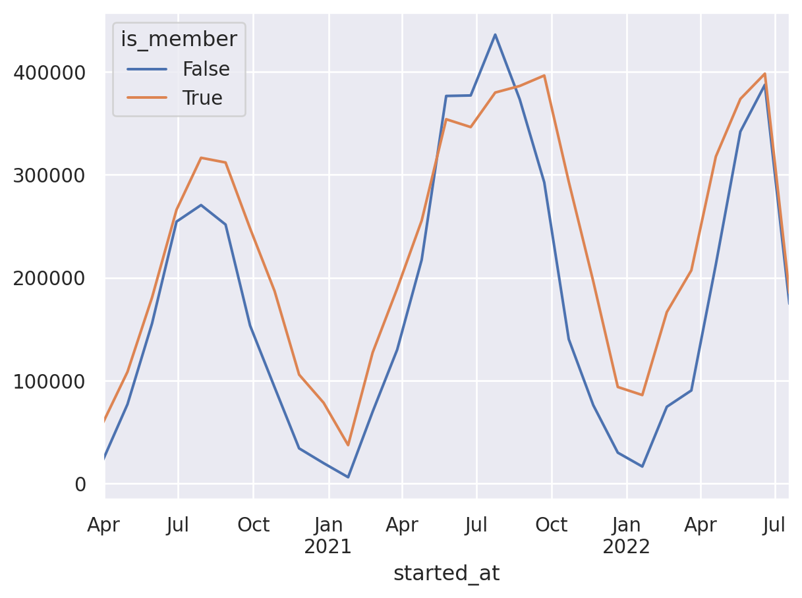

import pandas as pd
from glob import glob
import polars as pl
import requests
import plotly.express as px
import seaborn as sns
sns.set()df = (pd
.concat([pd.read_csv(data) for data in glob("data/2*")])
.assign(started_at = lambda x: pd.to_datetime(x.started_at).dt.tz_localize("US/Central", ambiguous=True)
, ended_at = lambda x: pd.to_datetime(x.ended_at).dt.tz_localize("US/Central", ambiguous=True)
, is_member = lambda x: x.member_casual == 'member'
)
)df = (
pl.scan_csv(
"data/*",
dtypes={
"start_station_id": str,
"end_station_id": str,
"started_at": pl.Datetime(time_zone="US/Central"),
"ended_at": pl.Datetime(time_zone="US/Central"),
},
)
.with_columns((pl.col("member_casual") == "member").alias("is_member"))
.collect()
)date_min, date_max = (
str(df.get_column("started_at").min()).split(" ")[0],
str(df.get_column("started_at").max()).split(" ")[0],
)mystery_lat, mystery_long = 41.960000, -87.680000
resp = requests.get(
f"https://archive-api.open-meteo.com/v1/archive?latitude={mystery_lat}&longitude={mystery_long}&start_date={date_min}&end_date={date_max}&hourly=temperature_2m&temperature_unit=fahrenheit"
)
time_df = pl.DataFrame(
resp.json()["hourly"], schema={"time": str, "temperature_2m": float}
).with_columns(
pl.col("time").str.to_datetime(time_zone="UTC").dt.convert_time_zone("US/Central")
)(
df.to_pandas()
.set_index("started_at")
.groupby("is_member")
.ride_id.resample("30D")
.count()
.unstack(0)
.plot()
);
px.line(
df.sort("started_at")
.join_asof(time_df.sort(by="time"), left_on="started_at", right_on="time")
.groupby_dynamic("started_at", every="30d", by="is_member")
.agg(
[
pl.col("start_station_id").count().alias("number_of_rides"),
pl.col("temperature_2m").mean().alias("avg temp"),
]
),
x="started_at",
y="number_of_rides",
color="is_member",
title="Bike Share Rides by membership",
)